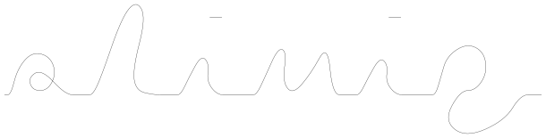

Stay playful · 400 mm · fluida
4 tratti · LED 902.0 mm · raggio osservato 0.705 mm · Incompatibile
Confronto a parametri LED fissi: 6 × 8 mm, raggio 12 mm, tolleranza 0,3 mm, pareti 1,2 mm, fondo 1,5 mm. Anteprime candidate, senza verifica visiva o fisica. Nero pulito non significa compatibile; leggere lo stato.
4 tratti · LED 902.0 mm · raggio osservato 0.705 mm · Incompatibile
4 tratti · LED 746.8 mm · raggio osservato 0.736 mm · Incompatibile
4 tratti · LED 1049.0 mm · raggio osservato 0.597 mm · Incompatibile
4 tratti · LED 1353.2 mm · raggio osservato 1.057 mm · Incompatibile
4 tratti · LED 1120.4 mm · raggio osservato 1.105 mm · Incompatibile
4 tratti · LED 1573.7 mm · raggio osservato 0.896 mm · Incompatibile
1 tratti · LED 761.2 mm · raggio osservato 1.313 mm · Incompatibile
1 tratti · LED 656.5 mm · raggio osservato 1.355 mm · Incompatibile
1 tratti · LED 854.9 mm · raggio osservato 1.114 mm · Incompatibile
1 tratti · LED 1141.8 mm · raggio osservato 1.969 mm · Incompatibile
1 tratti · LED 985.0 mm · raggio osservato 2.032 mm · Incompatibile
1 tratti · LED 1282.4 mm · raggio osservato 1.671 mm · Incompatibile
3 tratti · LED 786.2 mm · raggio osservato 1.393 mm · Incompatibile
3 tratti · LED 663.7 mm · raggio osservato 1.430 mm · Incompatibile
3 tratti · LED 895.3 mm · raggio osservato 1.181 mm · Incompatibile
3 tratti · LED 1179.4 mm · raggio osservato 2.090 mm · Incompatibile
3 tratti · LED 995.6 mm · raggio osservato 2.146 mm · Incompatibile

3 tratti · LED 1343.0 mm · raggio osservato 1.772 mm · Incompatibile
4 tratti · LED 814.0 mm · raggio osservato 0.742 mm · Incompatibile
4 tratti · LED 688.3 mm · raggio osservato 0.570 mm · Incompatibile
4 tratti · LED 918.3 mm · raggio osservato 0.629 mm · Incompatibile
4 tratti · LED 1221.1 mm · raggio osservato 1.113 mm · Incompatibile
4 tratti · LED 1032.5 mm · raggio osservato 0.855 mm · Incompatibile
4 tratti · LED 1377.6 mm · raggio osservato 0.943 mm · Incompatibile
2 tratti · LED 771.0 mm · raggio osservato 0.469 mm · Incompatibile
2 tratti · LED 661.2 mm · raggio osservato 0.343 mm · Incompatibile
2 tratti · LED 874.8 mm · raggio osservato 0.397 mm · Incompatibile
2 tratti · LED 1156.7 mm · raggio osservato 0.703 mm · Incompatibile
2 tratti · LED 992.0 mm · raggio osservato 0.515 mm · Incompatibile
2 tratti · LED 1312.5 mm · raggio osservato 0.595 mm · Incompatibile
5 tratti · LED 834.6 mm · raggio osservato 0.628 mm · Incompatibile
5 tratti · LED 705.6 mm · raggio osservato 0.454 mm · Incompatibile
5 tratti · LED 952.5 mm · raggio osservato 0.532 mm · Incompatibile
5 tratti · LED 1252.1 mm · raggio osservato 0.942 mm · Incompatibile
5 tratti · LED 1058.5 mm · raggio osservato 0.681 mm · Incompatibile
5 tratti · LED 1429.0 mm · raggio osservato 0.798 mm · Incompatibile